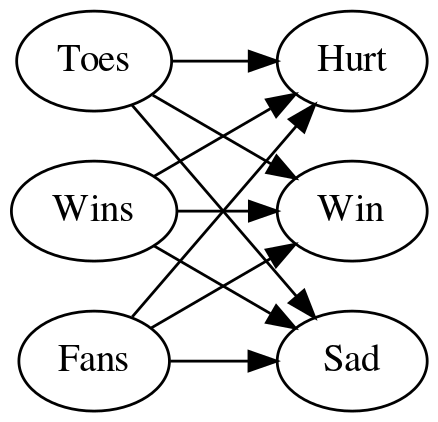
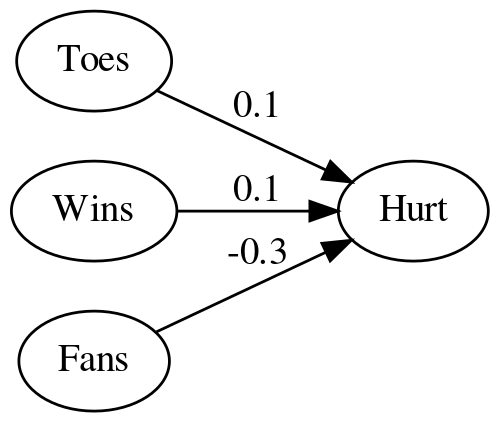

How do you handle multiple inputs and outputs?
Table of Contents
Beginning
Imports
From Python
from functools import partial
from pathlib import Path
from typing import List
From PyPi
from graphviz import Digraph
from tabulate import tabulate
import holoviews
import numpy
import pandas
Set Up
Table Printer
TABLE = partial(tabulate, tablefmt="orgtbl", headers="keys")
Plotting
SLUG = "how-do-you-handle-multiple-inputs-and-outputs"
ROOT = "../../../files/posts/grokking/03_forward_propagation/"
OUTPUT_PATH = Path(ROOT)/SLUG
Embed = partial(EmbedHoloviews, folder_path=OUTPUT_PATH)
Some Types
Vector = List[float]
Matrix = List[Vector]
What is this?
This is a continuation of my notes on Chapter Three of "Grokking Deep Learning". In the previous post we looked at a simple neural network with one input and three outputs. Here we'll look at handling multiple inputs and outputs.
Middle
So how do you handle multiple inputs and outputs?
You create a network that has a node for each of the inputs and each input node has an output to each of the outputs. Here's the matrix representation of the network we're going to use.
data = pandas.DataFrame(
dict(
source=["Toes"] * 3 + ["Wins"] * 3 + ["Fans"] * 3,
target=["Hurt", "Win", "Sad"] * 3,
edge = [0.1, 0.1, 0, 0.1, 0.2, 1.3, -0.3, 0.0, 0.1]))
print(TABLE(data, showindex=False))
| source | target | edge |
|---|---|---|
| Toes | Hurt | 0.1 |
| Toes | Win | 0.1 |
| Toes | Sad | 0 |
| Wins | Hurt | 0.1 |
| Wins | Win | 0.2 |
| Wins | Sad | 1.3 |
| Fans | Hurt | -0.3 |
| Fans | Win | 0 |
| Fans | Sad | 0.1 |

Adding the weights to the diagram made it hard to read so here's a table version of the weights for the edges.
edges = data.pivot(index="target", columns="source", values="edge")
edges.columns.name = None
edges.index.name = None
print(TABLE(edges))
| Fans | Toes | Wins | |
|---|---|---|---|
| Hurt | -0.3 | 0.1 | 0.1 |
| Sad | 0.1 | 0 | 1.3 |
| Win | 0 | 0.1 | 0.2 |
Okay, but how do you build that network?
It's basically the same as with one output except you repeat for each node - for each node you calculate the weighted sum (dot product) of the inputs.
Dot Product
def weighted_sum(inputs, weights):
"""Calculates the weighted sum of the inputs
Args:
"""
assert len(inputs) == len(weights)
return sum((inputs[index] * weights[index] for index in range(len(inputs))))
Vector-Matrix Multiplication
We'll take the inputs as a vector of length three since we have three features and the weights as a matrix of three rows and three columns and then multiply the inputs by each of the rows of weights using the dot product to get our three outputs.
- for each output take the dot product of the weights of its inputs and the input vector
def vector_matrix_multiplication(vector: Vector, matrix: Matrix) -> Vector:
"""takes the dot product of each row in the matrix and the vector
Args:
vector: the inputs to the network
matrix: the weights
Returns:
outputs: the network's outputs
"""
vector_length = len(vector)
assert vector_length == len(matrix)
return [weighted_sum(vector, matrix[output])
for output in range(vector_length)]
To test it out I'll convert the weights to a matrix (list of lists).
weights = edges.values
Now we'll create a team that averages 8.5 toes per player, has won 65 percent of its games and has 1.2 million fans. Note that we have to match the column order of our edge data-frame.
TOES = 8.5
WINS = 0.65
FANS = 1.2
inputs = [FANS, TOES, WINS]
What does it predict? The output of our function will be a vector with the outputs in the order of the rows in our edge-matrix.
outputs = vector_matrix_multiplication(inputs, weights)
HURT = 0.555
SAD = 0.965
WIN = 0.98
expected_outputs = [HURT, SAD, WIN]
tolerance = 0.1**5
expected_actual = zip(expected_outputs, outputs)
names = "Hurt Sad Win".split()
print("| Node| Value|")
print("|-+-|")
for index, (expected, actual) in enumerate(expected_actual):
print(f"|{names[index]}|{actual:.3f}")
assert abs(actual - expected) < tolerance,\
"Expected: {} Actual: {} Difference: {}".format(expected,
actual,
expected-actual)
| Node | Value |
|---|---|
| Hurt | 0.555 |
| Sad | 0.965 |
| Win | 0.980 |
So we are predicting that they have a 98% chance of winning and a 97% chance of being sad? I guess the fans have emotional problems outside of sports.
The Pandas Way
predictions = edges.dot(inputs)
print(TABLE(predictions.reset_index().rename(
columns={"index": "Node", 0: "Value"}), showindex=False))
| Node | Value |
|---|---|
| Hurt | 0.555 |
| Sad | 0.965 |
| Win | 0.98 |
Ending
So, like we saw previously that finding the charge for a neuron is just vector math and making a network of neurons doesn't really change that, instead of doing it all as one matrix we could have taken each of our output nodes and treated them as a separate vector that we used to take the dot product:
print("|Node | Value|")
print("|-+-|")
for node in edges.index:
print(f"|{node} |{edges.loc[node].dot(inputs): 0.3f}|")
| Node | Value |
|---|---|
| Hurt | 0.555 |
| Sad | 0.965 |
| Win | 0.980 |
Which is like going back to our single neuron case for each output.



But by stacking them in a matrix it becomes easier to work with them as the network gets larger.